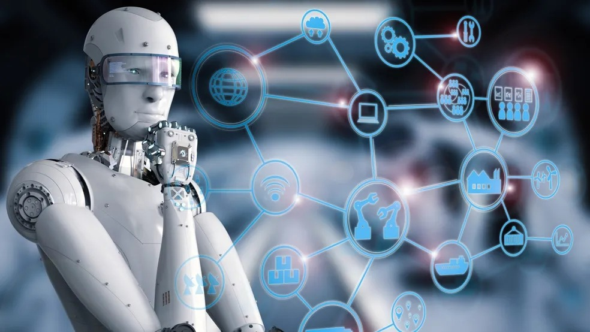
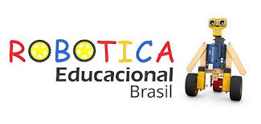

Robótica é um campo interdisciplinar da ciência e da engenharia dedicado ao design, construção, operação e uso de robôs. Os robôs são sistemas automatizados que podem executar tarefas de forma autônoma ou semi-autônoma. A robótica combina conhecimentos de:

Robos são maquinas progamaveis que pode realizar tarefas de forma autonomas ou controlada por humanos
1. estrutura mecanica - Feita com materiais como alumínio, plástico, aço ou compósitos.
Pode ter rodas, pernas, braços, pinças, entre outros atuadores.
2. Sensores - Permitem que o robô perceba o ambiente.
Exemplos: sensores ultrassônicos, infravermelho, câmeras, giroscópios, acelerômetros, sensores de toque e temperatura.
3. Atuadores-
São os “músculos” do robô. Transformam energia em movimento.
Exemplos: motores elétricos, servomotores, cilindros pneumáticos ou hidráulicos.
4. Unidade de Controle (Controlador)-
O “cérebro” do robô, geralmente um microcontrolador ou computador.
Exemplos: Arduino, Raspberry Pi, PLCs, placas embarcadas específicas.
5. Fonte de Energia-
Pode ser bateria, alimentação por cabo, energia solar, etc.
6. Software-
É o código que define como o robô deve agir, reagir e interagir.
1. Robôs Industriais -
Usados na fabricação de carros, eletrônicos, etc.
Executam tarefas repetitivas com precisão (solda, montagem, pintura).
2. Robôs Móveis -
Deslocam-se pelo ambiente, como aspiradores (Roomba), robôs de entrega, etc.
3. Robôs Humanoides -
Imitam a forma e/ou movimentos humanos (ex: ASIMO, Atlas da Boston Dynamics).
4. Robôs Médicos -
Auxiliam em cirurgias, reabilitação, diagnósticos e cuidados.
5. Robôs Submarinos e Espaciais -
Exploradores remotos, como o Curiosity (em Marte) ou ROVs oceânicos. (ou aquele que vocês sabem TITAN)
6. Robôs Educacionais -
Usados em escolas e universidades para ensinar programação e engenharia.
Automação: Uso de robôs e sistemas automáticos para controlar processos com mínima intervenção humana.
Inteligência Artificial (IA): Permite que robôs tomem decisões mais “inteligentes”, aprendam com dados e se adaptem.
Machine Learning (Aprendizado de Máquina): Subcampo da IA que pode ser usado para melhorar o desempenho de robôs com base em experiência.
Visão Computacional: Processamento de imagens por câmeras e sensores visuais.
Controle e Cinemática: Estudo dos movimentos e comandos de articulações robóticas.
